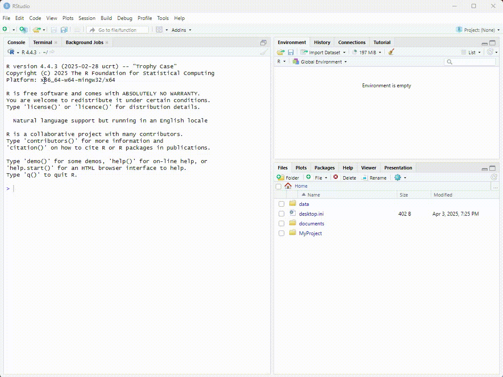
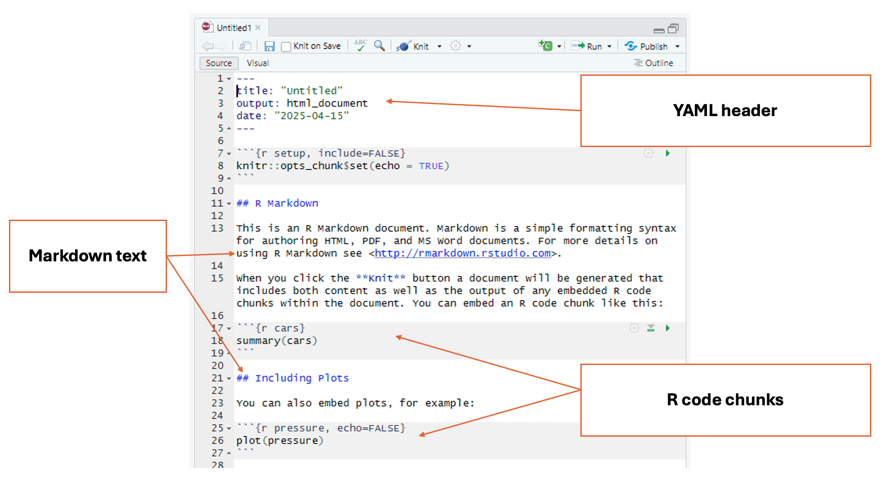

Introduction
RStudio is a program that helps you write and run R code more easily,
especially for working with data, making graphs, and doing
statistics.
In this tutorial, we will:
- Get familiarized with the RStudio interface
- Learn how to set the working directory
- Identify the types of documents we can create in R Studio
- Create an R Markdown file to start our project
RStudio Interface
When we launch RStudio for the first time, we notice three main
panels or quadrants:

Once we open a document, the interface will show four main
panels:

1 - Top left panel
Files and scripts (source window or code editor)
This is your code editor, where you write, save, and run R scripts
(.R), RMarkdown documents (.Rmd), or other file types.
2 - Bottom left panel
R console and terminal
This is the interactive R console, where code is executed
immediately. You can:
- Type and run commands interactively (great for testing small bits of
code).
- View outputs, error messages, and warnings in real time.
- Switch to the Terminal tab for system-level commands.
3 - Top right panel
Objects, history, environment, tutorial and connections
This area lets you track what’s happening in your R session.
It has different tabs for different actions:
- Environment: See all objects (like data frames,
functions, variables) currently in memory.
- History: View all commands you’ve previously
run.
- Connections: Manage database connections.
- Tutorial: View built-in interactive tutorials (from
the learnr package).
4 - Bottom right panel
Tree of folders, plots, packages, help, viewer
This panel contains various tools and outputs:
- Files: Navigate your folder structure and open
scripts.
- Plots: View visualizations generated by your
code.
- Packages: Install, load, or update R packages.
- Help: Search R documentation
(
?function_name shows here).
- Viewer: View HTML content, like R Markdown outputs
or Shiny apps.
R Projects
File paths
We use file paths to indicate the exact location of a file in our
computer. There are two main types of file paths: absolute and
relative.
Absolute paths
Absolute paths have the full address to a file or folder and are
specific to operating systems:
Example (Windows): C:\Users\Name\Documents\Research\data.csv
Example (Mac): /Users/Name/Documents/Research/data.csv
Note: Windows uses \, MacOS uses /
Relative paths
Relative paths have the location of a file relative to the current
directory or the directory where your R script is located (if you’re
using R).
- It’s portable, meaning you can share it with others as long as they
have the same file structure.
Example (if you're in the Documents folder): Research/data.csv
This means “look for the file data.csv inside the
Research folder, which is in the same folder as the current
working directory.”
Setting working directory
Most R tutorials and books teach the function setwd()
for setting the working directory. This function manually sets the
working directory during an R session. It tells R where to look for
files and where to save outputs just for that session.
But here’s the problem…
Using setwd() can break your code when:
- Someone else tries to run it on their machine.
- You move your project folder.
- You’re running your code on a server or in cloud environments like
RStudio Cloud.
Since file paths are hardcoded and depend on your machine,
it’s not reproducible.
Create an R Project
An R Project is a feature in RStudio (and supported in base R too)
that provides a self-contained working environment. When you create an R
Project it creates a .Rproj file in a folder and that folder becomes the
root directory of your project. Every time you open the project (via the
.Rproj file), R automatically sets the working directory to that folder.
You can reference files relative to the project root — no need to
hardcode file paths.
This is super useful when you’re working on multiple analyses,
sharing code with collaborators, or version-controlling with Git.
It is a good practice for reproducible research
To create an R Project, select File > New Project

Types of files in R
There are two main types of files we can create in R studio to edit
our code (R script files .R and RMarkdown files
.Rmd)
The R script file (.R) is a plain text file that
contains R code only. Use it when you want to write and run code
line-by-line, such as for data cleaning, analysis, or function building.
It’s good for experimenting, scripting, and running code interactively.
It’s also good for sharing code with other researchers.
The RMarkdown file (.Rmd) has a mix of R code and
written explanations, using Markdown formatting. It can be used to
create dynamic, reproducible reports that can be knitted into HTML, PDF,
or Word documents.It’s great for homework, research reports, dashboards,
or combining narrative with code.
To create an RMarkdown file, select File > New File >
RMarkdown

Markdown
Markdown is a simple way to format text using plain symbols and
characters, without needing complex tools. It was designed to make
creating documents easy and readable. Many websites, blogs, and online
platforms use Markdown because it is quick to write and easy to convert
into nice-looking documents. Learning Markdown gives you a foundation
for organizing your ideas clearly, and it’s the basic language that
RMarkdown builds on to create reports that combine text, code, and
results all in one document.
RMarkdown
With RMarkdown, you can write plain text like in Markdown — but you
can also insert chunks of R code that run directly inside the document.
This means you can create reports that mix text, analysis, tables, and
graphs all in one place. RMarkdown automatically runs the code, captures
the results, and formats everything into a polished document like a PDF,
Word file, or website.
The key difference between the RScript files and RMarkdown files is
that RScript is used for executing code and performing computations,
whereas RMarkdown is a tool for combining R code with explanatory text
in a structured document. In RMarkdown, code chunks can be embedded
within a narrative, and when the document is knit the
results (including text, tables, and plots) are automatically generated
and formatted, making it ideal for creating research reports, analyses,
and presentations.
RMarkdown offers formatting options that help us organize the file
into sections, it is a good practice to document every step taken when
working with data.
RMarkdown structure
RMarkdown documents have three main parts:
- YAML header
- Markdown text
- R code chunks

RMarkdown text
This is the regular explanatory text in the document. You can use
simple formatting: bold, italics, lists,
headers, links, etc.
| # |
Level 1 heading |
| ## |
Level 2 heading |
| ### |
Level 3 heading |
| * word * (without spaces) |
Italics |
| ** word ** (without spaces) |
Bold |
R Code Chunks
These are sections of code surrounded by triple backticks and
{r}.This is where you write the actual R code that runs analyses,
creates plots, loads data, etc. Inside a chunk of R code, everything
behaves the same as a regular R document.
```{r}
```
For additional information, visit the
RMarkdown lesson
from RStudio, and the
RMarkdown definitive
guide
Your Turn!
Create your first RProject. We will name this project
js_timeuse_2025
Create your first RMarkdown file. We will name this file
script_js_timeuse_2025
In your RMarkdown file, add the following:
1. Level 1 heading "Learning RDM with Time Use Project"
2. Brief description of the project:
3. Level 2 heading "My first chunk of code"
4. Insert an empty chunk of code
5. Inside the chunk of code, type the following: `5+3` (Yes! R can be used as a simple calculator too!)
6. Click the play button on the top right corner of the code chunk. This will display the result of the code chunk.
Finally, lets save and visualize our work.
-Click on the save button in the top left panel. Make sure you are in
the correct folder. Save the file as
’script_js_timeuse_2025.Rmd
-Click the knit icon at the top of your code editor to preview your
formatted file in .html
We will continue adding information to this RMarkdown file later
today and the rest of the week.
LS0tCnRpdGxlOiAiU2V0dGluZyB1cCBSIgpwYWdldGl0bGU6ICJTZXR0aW5nIHVwIFIiCm91dHB1dDoKICBodG1sX2RvY3VtZW50OgogICAgY29kZV9mb2xkaW5nOiBzaG93ICMgYWxsb3dzIHRvZ2dsaW5nIG9mIHNob3dpbmcgYW5kIGhpZGluZyBjb2RlLiBSZW1vdmUgaWYgbm90IHVzaW5nIGNvZGUuCiAgICBjb2RlX2Rvd25sb2FkOiB0cnVlICMgYWxsb3dzIHRoZSB1c2VyIHRvIGRvd25sb2FkIHRoZSBzb3VyY2UgLlJtZCBmaWxlLiBSZW1vdmUgaWYgbm90IHVzaW5nIGNvZGUuCiAgICBpbmNsdWRlczoKICAgICAgYWZ0ZXJfYm9keTogZm9vdGVyLmh0bWwgIyBpbmNsdWRlIGEgY3VzdG9tIGZvb3Rlci4KICAgIHRvYzogdHJ1ZQogICAgdG9jX2RlcHRoOiAzCiAgICB0b2NfZmxvYXQ6CiAgICAgIGNvbGxhcHNlZDogZmFsc2UKICAgICAgc21vb3RoX3Njcm9sbDogZmFsc2UKLS0tCmBgYHtyIHNldHVwLCBpbmNsdWRlPUZBTFNFfQprbml0cjo6b3B0c19jaHVuayRzZXQobWVzc2FnZSA9IEZBTFNFLCB3YXJuaW5ncyA9IEZBTFNFKQpgYGAKCiMjIEludHJvZHVjdGlvbgoKOjo6aW50cm8KUlN0dWRpbyBpcyBhIHByb2dyYW0gdGhhdCBoZWxwcyB5b3Ugd3JpdGUgYW5kIHJ1biBSIGNvZGUgbW9yZSBlYXNpbHksIGVzcGVjaWFsbHkgZm9yIHdvcmtpbmcgd2l0aCBkYXRhLCBtYWtpbmcgZ3JhcGhzLCBhbmQgZG9pbmcgc3RhdGlzdGljcy4KOjo6CgpJbiB0aGlzIHR1dG9yaWFsLCB3ZSB3aWxsOgoKLSBHZXQgZmFtaWxpYXJpemVkIHdpdGggdGhlIFJTdHVkaW8gaW50ZXJmYWNlCi0gTGVhcm4gaG93IHRvIHNldCB0aGUgd29ya2luZyBkaXJlY3RvcnkKLSBJZGVudGlmeSB0aGUgdHlwZXMgb2YgZG9jdW1lbnRzIHdlIGNhbiBjcmVhdGUgaW4gUiBTdHVkaW8KLSBDcmVhdGUgYW4gUiBNYXJrZG93biBmaWxlIHRvIHN0YXJ0IG91ciBwcm9qZWN0CgojIyBSU3R1ZGlvIEludGVyZmFjZQoKV2hlbiB3ZSBsYXVuY2ggUlN0dWRpbyBmb3IgdGhlIGZpcnN0IHRpbWUsIHdlIG5vdGljZSB0aHJlZSBtYWluIHBhbmVscyBvciBxdWFkcmFudHM6IAoKIVtdKGltYWdlcy9kYXkyX1JTdHVkaW9fM3BhbmVsLnBuZykKCk9uY2Ugd2Ugb3BlbiBhIGRvY3VtZW50LCB0aGUgaW50ZXJmYWNlIHdpbGwgc2hvdyBmb3VyIG1haW4gcGFuZWxzOgoKIVtdKGltYWdlcy9kYXkyX1JTdHVkaW9fNHBhbmVsLnBuZykKCiMjIyAxIC0gVG9wIGxlZnQgcGFuZWwKIyMjIyBGaWxlcyBhbmQgc2NyaXB0cyAoc291cmNlIHdpbmRvdyBvciBjb2RlIGVkaXRvcikKClRoaXMgaXMgeW91ciBjb2RlIGVkaXRvciwgd2hlcmUgeW91IHdyaXRlLCBzYXZlLCBhbmQgcnVuIFIgc2NyaXB0cyAoLlIpLCBSTWFya2Rvd24gZG9jdW1lbnRzICguUm1kKSwgb3Igb3RoZXIgZmlsZSB0eXBlcy4KCiMjIyAyIC0gQm90dG9tIGxlZnQgcGFuZWwKIyMjIyBSIGNvbnNvbGUgYW5kIHRlcm1pbmFsCgpUaGlzIGlzIHRoZSBpbnRlcmFjdGl2ZSBSIGNvbnNvbGUsIHdoZXJlIGNvZGUgaXMgZXhlY3V0ZWQgaW1tZWRpYXRlbHkuIFlvdSBjYW46CgogLSBUeXBlIGFuZCBydW4gY29tbWFuZHMgaW50ZXJhY3RpdmVseSAoZ3JlYXQgZm9yIHRlc3Rpbmcgc21hbGwgYml0cyBvZiBjb2RlKS4KIC0gVmlldyBvdXRwdXRzLCBlcnJvciBtZXNzYWdlcywgYW5kIHdhcm5pbmdzIGluIHJlYWwgdGltZS4KIC0gU3dpdGNoIHRvIHRoZSBUZXJtaW5hbCB0YWIgZm9yIHN5c3RlbS1sZXZlbCBjb21tYW5kcy4KCiMjIyAzIC0gVG9wIHJpZ2h0IHBhbmVsCiMjIyMgT2JqZWN0cywgaGlzdG9yeSwgZW52aXJvbm1lbnQsIHR1dG9yaWFsIGFuZCBjb25uZWN0aW9ucwoKVGhpcyBhcmVhIGxldHMgeW91IHRyYWNrIHdoYXTigJlzIGhhcHBlbmluZyBpbiB5b3VyIFIgc2Vzc2lvbi4KCkl0IGhhcyBkaWZmZXJlbnQgdGFicyBmb3IgZGlmZmVyZW50IGFjdGlvbnM6IAoKIC0gKipFbnZpcm9ubWVudDoqKiBTZWUgYWxsIG9iamVjdHMgKGxpa2UgZGF0YSBmcmFtZXMsIGZ1bmN0aW9ucywgdmFyaWFibGVzKSBjdXJyZW50bHkgaW4gbWVtb3J5LgogLSAqKkhpc3Rvcnk6KiogVmlldyBhbGwgY29tbWFuZHMgeW914oCZdmUgcHJldmlvdXNseSBydW4uCiAtICoqQ29ubmVjdGlvbnM6KiogTWFuYWdlIGRhdGFiYXNlIGNvbm5lY3Rpb25zLgogLSAqKlR1dG9yaWFsOioqIFZpZXcgYnVpbHQtaW4gaW50ZXJhY3RpdmUgdHV0b3JpYWxzIChmcm9tIHRoZSBsZWFybnIgcGFja2FnZSkuCgojIyMgNCAtIEJvdHRvbSByaWdodCBwYW5lbAojIyMjIFRyZWUgb2YgZm9sZGVycywgcGxvdHMsIHBhY2thZ2VzLCBoZWxwLCB2aWV3ZXIKClRoaXMgcGFuZWwgY29udGFpbnMgdmFyaW91cyB0b29scyBhbmQgb3V0cHV0czoKCiAtICoqRmlsZXM6KiogTmF2aWdhdGUgeW91ciBmb2xkZXIgc3RydWN0dXJlIGFuZCBvcGVuIHNjcmlwdHMuCiAtICoqUGxvdHM6KiogVmlldyB2aXN1YWxpemF0aW9ucyBnZW5lcmF0ZWQgYnkgeW91ciBjb2RlLgogLSAqKlBhY2thZ2VzOioqIEluc3RhbGwsIGxvYWQsIG9yIHVwZGF0ZSBSIHBhY2thZ2VzLgogLSAqKkhlbHA6KiogU2VhcmNoIFIgZG9jdW1lbnRhdGlvbiAoYD9mdW5jdGlvbl9uYW1lYCBzaG93cyBoZXJlKS4KIC0gKipWaWV3ZXI6KiogVmlldyBIVE1MIGNvbnRlbnQsIGxpa2UgUiBNYXJrZG93biBvdXRwdXRzIG9yIFNoaW55IGFwcHMuCgojIyBSIFByb2plY3RzIAoKIyMjIEZpbGUgcGF0aHMKV2UgdXNlIGZpbGUgcGF0aHMgdG8gaW5kaWNhdGUgdGhlIGV4YWN0IGxvY2F0aW9uIG9mIGEgZmlsZSBpbiBvdXIgY29tcHV0ZXIuIFRoZXJlIGFyZSB0d28gbWFpbiB0eXBlcyBvZiBmaWxlIHBhdGhzOiBhYnNvbHV0ZSBhbmQgcmVsYXRpdmUuCgojIyMjIEFic29sdXRlIHBhdGhzIApBYnNvbHV0ZSBwYXRocyBoYXZlIHRoZSBmdWxsIGFkZHJlc3MgdG8gYSBmaWxlIG9yIGZvbGRlciBhbmQgYXJlIHNwZWNpZmljIHRvIG9wZXJhdGluZyBzeXN0ZW1zOgoKYGBgYG1hcmtkb3duCmByICcnYEV4YW1wbGUgKFdpbmRvd3MpOiBDOlxVc2Vyc1xOYW1lXERvY3VtZW50c1xSZXNlYXJjaFxkYXRhLmNzdgpFeGFtcGxlIChNYWMpOiAvVXNlcnMvTmFtZS9Eb2N1bWVudHMvUmVzZWFyY2gvZGF0YS5jc3YKCk5vdGU6IFdpbmRvd3MgdXNlcyBcLCBNYWNPUyB1c2VzIC8KYGBgYAoKIAoKIyMjIyBSZWxhdGl2ZSBwYXRocyAKUmVsYXRpdmUgcGF0aHMgaGF2ZSB0aGUgbG9jYXRpb24gb2YgYSBmaWxlIHJlbGF0aXZlIHRvIHRoZSBjdXJyZW50IGRpcmVjdG9yeSBvciB0aGUgZGlyZWN0b3J5IHdoZXJlIHlvdXIgUiBzY3JpcHQgaXMgbG9jYXRlZCAoaWYgeW91J3JlIHVzaW5nIFIpLgogCiAtIEl04oCZcyBwb3J0YWJsZSwgbWVhbmluZyB5b3UgY2FuIHNoYXJlIGl0IHdpdGggb3RoZXJzIGFzIGxvbmcgYXMgdGhleSBoYXZlIHRoZSBzYW1lIGZpbGUgc3RydWN0dXJlLgogCiAKIGBgYGBtYXJrZG93bgpgciAnJyBgRXhhbXBsZSAoaWYgeW91J3JlIGluIHRoZSBEb2N1bWVudHMgZm9sZGVyKTogUmVzZWFyY2gvZGF0YS5jc3YKYGBgYAoKVGhpcyBtZWFucyAibG9vayBmb3IgdGhlIGZpbGUgKmRhdGEuY3N2KiBpbnNpZGUgdGhlICpSZXNlYXJjaCBmb2xkZXIqLCB3aGljaCBpcyBpbiB0aGUgc2FtZSBmb2xkZXIgYXMgdGhlIGN1cnJlbnQgd29ya2luZyBkaXJlY3RvcnkuIgoKIyMjIFNldHRpbmcgd29ya2luZyBkaXJlY3RvcnkKCk1vc3QgUiB0dXRvcmlhbHMgYW5kIGJvb2tzIHRlYWNoIHRoZSBmdW5jdGlvbiBgc2V0d2QoKWAgZm9yIHNldHRpbmcgdGhlIHdvcmtpbmcgZGlyZWN0b3J5LiBUaGlzIGZ1bmN0aW9uIG1hbnVhbGx5IHNldHMgdGhlIHdvcmtpbmcgZGlyZWN0b3J5IGR1cmluZyBhbiBSIHNlc3Npb24uIEl0IHRlbGxzIFIgd2hlcmUgdG8gbG9vayBmb3IgZmlsZXMgYW5kIHdoZXJlIHRvIHNhdmUgb3V0cHV0cyBqdXN0IGZvciB0aGF0IHNlc3Npb24uCgpCdXQgaGVyZeKAmXMgdGhlIHByb2JsZW0uLi4KClVzaW5nIGBzZXR3ZCgpYCBjYW4gYnJlYWsgeW91ciBjb2RlIHdoZW46CgogLSBTb21lb25lIGVsc2UgdHJpZXMgdG8gcnVuIGl0IG9uIHRoZWlyIG1hY2hpbmUuCiAtIFlvdSBtb3ZlIHlvdXIgcHJvamVjdCBmb2xkZXIuCiAtIFlvdSdyZSBydW5uaW5nIHlvdXIgY29kZSBvbiBhIHNlcnZlciBvciBpbiBjbG91ZCBlbnZpcm9ubWVudHMgbGlrZSBSU3R1ZGlvIENsb3VkLgoKU2luY2UgZmlsZSBwYXRocyBhcmUgaGFyZGNvZGVkIGFuZCBkZXBlbmQgb24geW91ciBtYWNoaW5lLCAqKml0J3Mgbm90IHJlcHJvZHVjaWJsZSoqLgoKIyMjIENyZWF0ZSBhbiBSIFByb2plY3QKCkFuIFIgUHJvamVjdCBpcyBhIGZlYXR1cmUgaW4gUlN0dWRpbyAoYW5kIHN1cHBvcnRlZCBpbiBiYXNlIFIgdG9vKSB0aGF0IHByb3ZpZGVzIGEgc2VsZi1jb250YWluZWQgd29ya2luZyBlbnZpcm9ubWVudC4gV2hlbiB5b3UgY3JlYXRlIGFuIFIgUHJvamVjdCBpdCBjcmVhdGVzIGEgLlJwcm9qIGZpbGUgaW4gYSBmb2xkZXIgYW5kIHRoYXQgZm9sZGVyIGJlY29tZXMgdGhlIHJvb3QgZGlyZWN0b3J5IG9mIHlvdXIgcHJvamVjdC4gRXZlcnkgdGltZSB5b3Ugb3BlbiB0aGUgcHJvamVjdCAodmlhIHRoZSAuUnByb2ogZmlsZSksIFIgYXV0b21hdGljYWxseSBzZXRzIHRoZSB3b3JraW5nIGRpcmVjdG9yeSB0byB0aGF0IGZvbGRlci4gWW91IGNhbiByZWZlcmVuY2UgZmlsZXMgcmVsYXRpdmUgdG8gdGhlIHByb2plY3Qgcm9vdCDigJQgbm8gbmVlZCB0byBoYXJkY29kZSBmaWxlIHBhdGhzLgoKVGhpcyBpcyBzdXBlciB1c2VmdWwgd2hlbiB5b3UncmUgd29ya2luZyBvbiBtdWx0aXBsZSBhbmFseXNlcywgc2hhcmluZyBjb2RlIHdpdGggY29sbGFib3JhdG9ycywgb3IgdmVyc2lvbi1jb250cm9sbGluZyB3aXRoIEdpdC4gKipJdCBpcyBhIGdvb2QgcHJhY3RpY2UgZm9yIHJlcHJvZHVjaWJsZSByZXNlYXJjaCoqCgpUbyBjcmVhdGUgYW4gUiBQcm9qZWN0LCBzZWxlY3QgRmlsZSA+IE5ldyBQcm9qZWN0CgohW10oaW1hZ2VzL2RheTJfQ3JlYXRlUHJvamVjdC5naWYpCgoKIyMgVHlwZXMgb2YgZmlsZXMgaW4gUgoKVGhlcmUgYXJlIHR3byBtYWluIHR5cGVzIG9mIGZpbGVzIHdlIGNhbiBjcmVhdGUgaW4gUiBzdHVkaW8gdG8gZWRpdCBvdXIgY29kZSAoUiBzY3JpcHQgZmlsZXMgYC5SYCBhbmQgUk1hcmtkb3duIGZpbGVzIGAuUm1kYCkKClRoZSBSIHNjcmlwdCBmaWxlIChgLlJgKSBpcyBhIHBsYWluIHRleHQgZmlsZSB0aGF0IGNvbnRhaW5zIFIgY29kZSBvbmx5LiBVc2UgaXQgd2hlbiB5b3Ugd2FudCB0byB3cml0ZSBhbmQgcnVuIGNvZGUgbGluZS1ieS1saW5lLCBzdWNoIGFzIGZvciBkYXRhIGNsZWFuaW5nLCBhbmFseXNpcywgb3IgZnVuY3Rpb24gYnVpbGRpbmcuIEl0J3MgZ29vZCBmb3IgZXhwZXJpbWVudGluZywgc2NyaXB0aW5nLCBhbmQgcnVubmluZyBjb2RlIGludGVyYWN0aXZlbHkuIEl0J3MgYWxzbyBnb29kIGZvciBzaGFyaW5nIGNvZGUgd2l0aCBvdGhlciByZXNlYXJjaGVycy4KClRoZSBSTWFya2Rvd24gZmlsZSAoYC5SbWRgKSBoYXMgYSBtaXggb2YgUiBjb2RlIGFuZCB3cml0dGVuIGV4cGxhbmF0aW9ucywgdXNpbmcgTWFya2Rvd24gZm9ybWF0dGluZy4gIEl0IGNhbiBiZSB1c2VkIHRvIGNyZWF0ZSBkeW5hbWljLCByZXByb2R1Y2libGUgcmVwb3J0cyB0aGF0IGNhbiBiZSBrbml0dGVkIGludG8gSFRNTCwgUERGLCBvciBXb3JkIGRvY3VtZW50cy5JdCdzIGdyZWF0IGZvciBob21ld29yaywgcmVzZWFyY2ggcmVwb3J0cywgZGFzaGJvYXJkcywgb3IgY29tYmluaW5nIG5hcnJhdGl2ZSB3aXRoIGNvZGUuCgpUbyBjcmVhdGUgYW4gUk1hcmtkb3duIGZpbGUsIHNlbGVjdCBGaWxlID4gTmV3IEZpbGUgPiBSTWFya2Rvd24KCiFbXShpbWFnZXMvZGF5Ml9DcmVhdGVSTWFya2Rvd24uZ2lmKQoKIyMgTWFya2Rvd24KTWFya2Rvd24gaXMgYSBzaW1wbGUgd2F5IHRvIGZvcm1hdCB0ZXh0IHVzaW5nIHBsYWluIHN5bWJvbHMgYW5kIGNoYXJhY3RlcnMsIHdpdGhvdXQgbmVlZGluZyBjb21wbGV4IHRvb2xzLiBJdCB3YXMgZGVzaWduZWQgdG8gbWFrZSBjcmVhdGluZyBkb2N1bWVudHMgZWFzeSBhbmQgcmVhZGFibGUuIE1hbnkgd2Vic2l0ZXMsIGJsb2dzLCBhbmQgb25saW5lIHBsYXRmb3JtcyB1c2UgTWFya2Rvd24gYmVjYXVzZSBpdCBpcyBxdWljayB0byB3cml0ZSBhbmQgZWFzeSB0byBjb252ZXJ0IGludG8gbmljZS1sb29raW5nIGRvY3VtZW50cy4gTGVhcm5pbmcgTWFya2Rvd24gZ2l2ZXMgeW91IGEgZm91bmRhdGlvbiBmb3Igb3JnYW5pemluZyB5b3VyIGlkZWFzIGNsZWFybHksIGFuZCBpdOKAmXMgdGhlIGJhc2ljIGxhbmd1YWdlIHRoYXQgUk1hcmtkb3duIGJ1aWxkcyBvbiB0byBjcmVhdGUgcmVwb3J0cyB0aGF0IGNvbWJpbmUgdGV4dCwgY29kZSwgYW5kIHJlc3VsdHMgYWxsIGluIG9uZSBkb2N1bWVudC4KCiMjIFJNYXJrZG93bgpXaXRoIFJNYXJrZG93biwgeW91IGNhbiB3cml0ZSBwbGFpbiB0ZXh0IGxpa2UgaW4gTWFya2Rvd24g4oCUIGJ1dCB5b3UgY2FuIGFsc28gaW5zZXJ0IGNodW5rcyBvZiBSIGNvZGUgdGhhdCBydW4gZGlyZWN0bHkgaW5zaWRlIHRoZSBkb2N1bWVudC4gVGhpcyBtZWFucyB5b3UgY2FuIGNyZWF0ZSByZXBvcnRzIHRoYXQgbWl4IHRleHQsIGFuYWx5c2lzLCB0YWJsZXMsIGFuZCBncmFwaHMgYWxsIGluIG9uZSBwbGFjZS4gUk1hcmtkb3duIGF1dG9tYXRpY2FsbHkgcnVucyB0aGUgY29kZSwgY2FwdHVyZXMgdGhlIHJlc3VsdHMsIGFuZCBmb3JtYXRzIGV2ZXJ5dGhpbmcgaW50byBhIHBvbGlzaGVkIGRvY3VtZW50IGxpa2UgYSBQREYsIFdvcmQgZmlsZSwgb3Igd2Vic2l0ZS4KClRoZSBrZXkgZGlmZmVyZW5jZSBiZXR3ZWVuIHRoZSBSU2NyaXB0IGZpbGVzIGFuZCBSTWFya2Rvd24gZmlsZXMgaXMgdGhhdCBSU2NyaXB0IGlzIHVzZWQgZm9yIGV4ZWN1dGluZyBjb2RlIGFuZCBwZXJmb3JtaW5nIGNvbXB1dGF0aW9ucywgd2hlcmVhcyBSTWFya2Rvd24gaXMgYSB0b29sIGZvciBjb21iaW5pbmcgUiBjb2RlIHdpdGggZXhwbGFuYXRvcnkgdGV4dCBpbiBhIHN0cnVjdHVyZWQgZG9jdW1lbnQuIEluIFJNYXJrZG93biwgY29kZSBjaHVua3MgY2FuIGJlIGVtYmVkZGVkIHdpdGhpbiBhIG5hcnJhdGl2ZSwgYW5kIHdoZW4gdGhlIGRvY3VtZW50IGlzICoqa25pdCoqIHRoZSByZXN1bHRzIChpbmNsdWRpbmcgdGV4dCwgdGFibGVzLCBhbmQgcGxvdHMpIGFyZSBhdXRvbWF0aWNhbGx5IGdlbmVyYXRlZCBhbmQgZm9ybWF0dGVkLCBtYWtpbmcgaXQgaWRlYWwgZm9yIGNyZWF0aW5nIHJlc2VhcmNoIHJlcG9ydHMsIGFuYWx5c2VzLCBhbmQgcHJlc2VudGF0aW9ucy4KClJNYXJrZG93biBvZmZlcnMgZm9ybWF0dGluZyBvcHRpb25zIHRoYXQgaGVscCB1cyBvcmdhbml6ZSB0aGUgZmlsZSBpbnRvIHNlY3Rpb25zLCBpdCBpcyBhIGdvb2QgcHJhY3RpY2UgdG8gZG9jdW1lbnQgZXZlcnkgc3RlcCB0YWtlbiB3aGVuIHdvcmtpbmcgd2l0aCBkYXRhLiAKCiMjIFJNYXJrZG93biBzdHJ1Y3R1cmUKClJNYXJrZG93biBkb2N1bWVudHMgaGF2ZSB0aHJlZSBtYWluIHBhcnRzOgoKIC0gKipZQU1MIGhlYWRlcioqIAogLSAqKk1hcmtkb3duIHRleHQqKiAKIC0gKipSIGNvZGUgY2h1bmtzKiogCiAKICFbXShpbWFnZXMvZGF5Ml9STWFya2Rvd24ucG5nKQoKIyMjIFlBTUwgaGVhZGVyClRoaXMgaXMgdGhlIHNlY3Rpb24gYXQgdGhlIHZlcnkgdG9wIG9mIHRoZSBkb2N1bWVudCAoZW5jbG9zZWQgYnkgLS0tIGxpbmVzKS4gSXQgaG9sZHMgbWV0YWRhdGEgYWJvdXQgeW91ciBkb2N1bWVudOKAlGxpa2UgdGhlIHRpdGxlLCBhdXRob3IsIGRhdGUsIGFuZCBvdXRwdXQgZm9ybWF0IChIVE1MLCBQREYsIFdvcmQsIGV0Yy4pLgoKIyMjIFJNYXJrZG93biB0ZXh0ClRoaXMgaXMgdGhlIHJlZ3VsYXIgZXhwbGFuYXRvcnkgdGV4dCBpbiB0aGUgZG9jdW1lbnQuIFlvdSBjYW4gdXNlIHNpbXBsZSBmb3JtYXR0aW5nOiAqKmJvbGQqKiwgKml0YWxpY3MqLCBsaXN0cywgaGVhZGVycywgbGlua3MsIGV0Yy4KCioqU3ltYm9sKiogfCoqRGVzY3JpcHRpb24qKgp8Oi0tLS0tLXw6LS0tLS0tfAp8ICN8IExldmVsIDEgaGVhZGluZ3wKfCAjI3wgTGV2ZWwgMiBoZWFkaW5nfAp8ICMjI3wgTGV2ZWwgMyBoZWFkaW5nfAp8ICogd29yZCAqICh3aXRob3V0IHNwYWNlcyl8ICpJdGFsaWNzKnwgCnwgKiogd29yZCAqKiAod2l0aG91dCBzcGFjZXMpfCAqKkJvbGQqKnwKCgojIyMgUiBDb2RlIENodW5rcwpUaGVzZSBhcmUgc2VjdGlvbnMgb2YgY29kZSBzdXJyb3VuZGVkIGJ5IHRyaXBsZSBiYWNrdGlja3MgYW5kIHtyfS5UaGlzIGlzIHdoZXJlIHlvdSB3cml0ZSB0aGUgYWN0dWFsIFIgY29kZSB0aGF0IHJ1bnMgYW5hbHlzZXMsIGNyZWF0ZXMgcGxvdHMsIGxvYWRzIGRhdGEsIGV0Yy4gSW5zaWRlIGEgY2h1bmsgb2YgUiBjb2RlLCBldmVyeXRoaW5nIGJlaGF2ZXMgdGhlIHNhbWUgYXMgYSByZWd1bGFyIFIgZG9jdW1lbnQuCgpgYGBgbWFya2Rvd24KYHIgJydgYGBge3J9CgpgYGAKYGBgYAoKRm9yIGFkZGl0aW9uYWwgaW5mb3JtYXRpb24sIHZpc2l0IHRoZSA8YSBocmVmPSJodHRwczovL3JtYXJrZG93bi5yc3R1ZGlvLmNvbS9sZXNzb24tOC5odG1sIj5STWFya2Rvd24gbGVzc29uIGZyb20gUlN0dWRpbzwvYT4sIGFuZCB0aGUgPGEgaHJlZj0iaHR0cHM6Ly9ib29rZG93bi5vcmcveWlodWkvcm1hcmtkb3duLyI+Uk1hcmtkb3duIGRlZmluaXRpdmUgZ3VpZGU8L2E+IAoKIyMgWW91ciBUdXJuISAKCjo6OnF1ZXN0aW9uCkNyZWF0ZSB5b3VyIGZpcnN0IFJQcm9qZWN0LiBXZSB3aWxsIG5hbWUgdGhpcyBwcm9qZWN0IGBqc190aW1ldXNlXzIwMjVgCjo6OgoKOjo6cXVlc3Rpb24KQ3JlYXRlIHlvdXIgZmlyc3QgUk1hcmtkb3duIGZpbGUuIFdlIHdpbGwgbmFtZSB0aGlzIGZpbGUgYHNjcmlwdF9qc190aW1ldXNlXzIwMjVgCjo6OgoKOjo6cXVlc3Rpb24KSW4geW91ciBSTWFya2Rvd24gZmlsZSwgYWRkIHRoZSBmb2xsb3dpbmc6Cjo6OgoKCmBgYGBtYXJrZG93bgoxLiBMZXZlbCAxIGhlYWRpbmcgIkxlYXJuaW5nIFJETSB3aXRoIFRpbWUgVXNlIFByb2plY3QiCjIuIEJyaWVmIGRlc2NyaXB0aW9uIG9mIHRoZSBwcm9qZWN0OiAKMy4gTGV2ZWwgMiBoZWFkaW5nICJNeSBmaXJzdCBjaHVuayBvZiBjb2RlIgo0LiBJbnNlcnQgYW4gZW1wdHkgY2h1bmsgb2YgY29kZQo1LiBJbnNpZGUgdGhlIGNodW5rIG9mIGNvZGUsIHR5cGUgdGhlIGZvbGxvd2luZzogYDUrM2AgKFllcyEgUiBjYW4gYmUgdXNlZCBhcyBhIHNpbXBsZSBjYWxjdWxhdG9yIHRvbyEpCjYuIENsaWNrIHRoZSBwbGF5IGJ1dHRvbiBvbiB0aGUgdG9wIHJpZ2h0IGNvcm5lciBvZiB0aGUgY29kZSBjaHVuay4gVGhpcyB3aWxsIGRpc3BsYXkgdGhlIHJlc3VsdCBvZiB0aGUgY29kZSBjaHVuay4gCiAKRmluYWxseSwgbGV0cyBzYXZlIGFuZCB2aXN1YWxpemUgb3VyIHdvcmsuCmBgYGAKIAo6OjpxdWVzdGlvbgoKLUNsaWNrIG9uIHRoZSBzYXZlIGJ1dHRvbiBpbiB0aGUgdG9wIGxlZnQgcGFuZWwuIE1ha2Ugc3VyZSB5b3UgYXJlIGluIHRoZSBjb3JyZWN0IGZvbGRlci4gU2F2ZSB0aGUgZmlsZSBhcyAnYHNjcmlwdF9qc190aW1ldXNlXzIwMjUuUm1kYAoKLUNsaWNrIHRoZSBrbml0IGljb24gYXQgdGhlIHRvcCBvZiB5b3VyIGNvZGUgZWRpdG9yIHRvIHByZXZpZXcgeW91ciBmb3JtYXR0ZWQgZmlsZSBpbiAuaHRtbAo6OjoKCldlIHdpbGwgY29udGludWUgYWRkaW5nIGluZm9ybWF0aW9uIHRvIHRoaXMgUk1hcmtkb3duIGZpbGUgbGF0ZXIgdG9kYXkgYW5kIHRoZSByZXN0IG9mIHRoZSB3ZWVrLgoKCgoKCg==